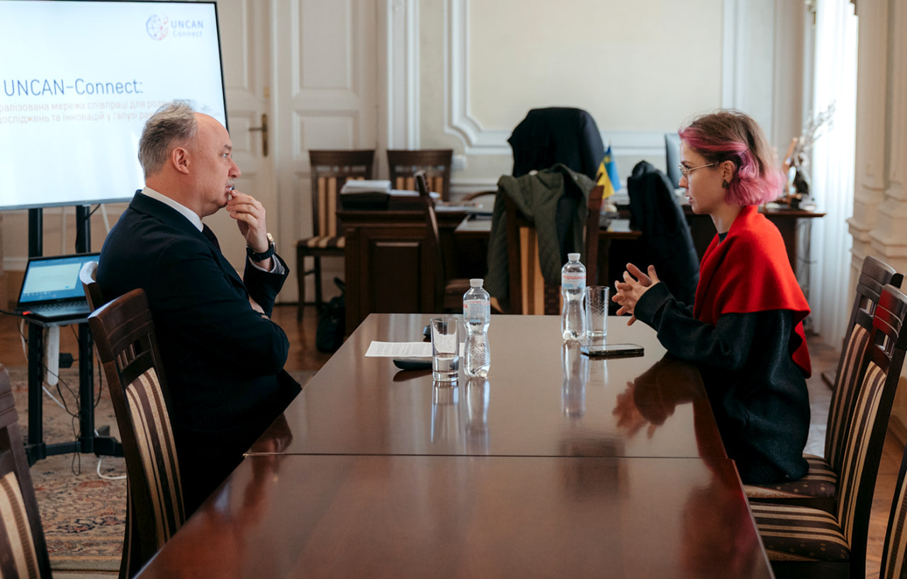

A Grand Grant: advantages and challenges of the Horizon Europe program for Ukrainians
05.06.26
The full-scale invasion has changed Ukrainian science. Researchers are leaving the country, laboratories are suffering from air raids, and international ties are disrupted or, on the contrary, are getting stronger. To examine Ukrainian science through the lens of European partnerships, we decided to speak with the people facilitating them during the war.
Horizon Europe is the ninth and largest EU framework program for research and innovation, with a budget of 95.5 billion euros, running until 2027. Ukraine is an associated member and is showing excellent results: Ukrainian organizations have received 63.4 million euros, almost 30% more than in the seven years of the previous Horizon 2020 program. 239 grant agreements were signed, and the number of unique participants from Ukraine grew from 173 to 234. The success rate of submitted applications is also telling: it has grown from 9% to 13%. Besides, in 2023, the Ukrainian Office of the Program was opened to help scientists prepare grant applications and integrate more efficiently into the European community.
In this interview, Ihor Taranov, the Head of the Horizon Europe Office in Ukraine, a Department of the National Research Foundation of Ukraine, Natalia Didenko, the Deputy Head of the Department, and Maksym Kolisnyk, the Chief Specialist, tell us what opportunities the Program offers to Ukrainian scientists during the war, what challenges they are facing, and what role the program may play in the postwar period. We also spoke to Roman Yatsyshyn, the Rector of the Ivano-Frankivsk National Medical University, which participates in the UNCAN-CONNECT cancer research program and the NanoBiotech Nexus nano- and biotechnological program, to discuss how the Horizon Europe program operates in practice.
How would you describe the current state of Ukrainian science?
Ihor Taranov: In general, European partners hold Ukrainian scientists in high regard, but there are a number of issues.
Of course, one of the leading issues that affects Ukrainian science negatively is insufficient funding. We have the Law of Ukraine “About Scientific and Scientific-Technical Activities,” which defines the budget for scientific funding. But it’s very difficult to achieve in practice. According to the Ministry of Education and Science, the level of funding doesn’t even reach 1% of the GDP. It’s very little, but also understandable: the government has to prioritize critical defense needs.

The second issue is destroyed infrastructure. Almost every day, after Russian air raids, there’s news about damaged universities, scientific institutions, or scientific infrastructure. Because of this, the Ministry of Education and Science actively utilizes centers for shared use of scientific equipment. Currently, the regulations are being refined to make these centers, located across Ukrainian territory, accessible to all scientists.
The third issue is the migration of scientists, so-called brain drain. Currently, there are both internally displaced researchers and those who relocated abroad, partially transferring their research to other countries. We have to create conditions where Ukrainian scientists would feel safe staying in Ukraine and could continue their research here, but it’s hard to achieve during the war. Young scientists deserve special attention, in my opinion, they are the drivers of future development.
And the last important issue is decent wages. Until we solve this problem, we will see scientists migrate, even as the safety situation improves.
What role do European organizations play in supporting Ukrainian science? Is this more of an emergency help, or are we talking about strategic investments in long-term partnerships?
Ihor Taranov: The European Union gave us both emergency and long-term support. And it’s typical. Any country in the world has a limited budget for science and sometimes needs international help.
At the beginning of the full-scale invasion, it was emergency support. In particular, we should mention the European Commission’s decision to exempt Ukraine from paying participation fees for the Horizon Europe program until 2027. Without it, Ukraine wouldn’t be able to become an associated member of the Program, and Ukrainian scientists wouldn’t have access to its proposals. Equipment donations were also emergency support at the beginning of the war: generators, solar batteries, hardware, scientific equipment, etc.

On the other hand, participation of Ukrainian teams in scheduled competitions on an equal basis is an investment in long-term partnerships. During such projects, consortia are formed, new partners are found, and research results have great potential.
Besides funding, what other issues affect the current state of Ukrainian science, according to European organizations?
Ihor Taranov: Access to infrastructure and laboratories is crucial. At the beginning of the [full-scale] invasion, Ukrainian scientists often continued their research abroad, using their partners’ laboratory facilities. Later, many partners concluded that access to research infrastructure could be organized online. For example, if we are talking about libraries, databases, or experiments that can be conducted using modern digital technology, this practice is widespread today.
Besides, some universities publish lists of equipment available for Ukrainian scientists. And Germany, for example, is actively collaborating with Ukraine to create centers of excellence — laboratories and research platforms in Ukraine: in Lviv, Kyiv, and Kharkiv. They allow Ukrainian researchers to work in their own country, without spending resources on constant travel.
What is the role of mentorship in supporting Ukrainian researchers?
Ihor Taranov: We are constantly analyzing available programs and watching how our applicants are doing compared to other participants. We are also conducting polls among our respondents to assess which skills and knowledge they lack and how we can address that.
Currently, we see that researchers are well-acquainted with the Horizon Europe Program, but they often lack practical skills. For example, they don’t know how to find a tender financing platform, register an organization, or find a relevant proposal.
That’s why we conduct separate sessions on working with the platform. We guide researchers through the process from registration to project proposal submission. Then, we teach how to compose grant applications by chapters. It’s important to emphasize that we don’t draft applications for applicants; it would be a conflict of interest, and it’s prohibited. But we are consulting them on every chapter.
We conduct mentorship sessions both online and offline. Usually, the whole team is present during consultations, because each person is responsible for a specific component of the Horizon Europe Program. For online consulting, we record them and place all useful materials in the chat. After each event, we have a networking session. It’s an important instrument of support for future researchers: some people already have experience of participation in Horizon Europe, and some have a successful application and can share practical advice. For example, project coordinators from Ukraine share very practical information on bureaucracy or on the intricacies of tax legislation. This helps the scientific community to prepare for real challenges.

Roman Yatsyshyn: A true scientist can’t develop in a vacuum; it’s always a long game based on deep partnerships and trust. If you don’t work side-by-side with experienced colleagues, if you are not trusted as a professional, you will never get to the international level. We regularly participate in mentorship sessions. We have the International and Project Department that monitors developments worldwide and emerging opportunities and instruments.
What opportunities are currently available for Ukrainians in the Horizon Europe framework?
Ihor Taranov: We’ve recently counted all the proposals open for Ukrainians until 2027, the last year of the Program in Ukraine, and there will be 741 of them. Each proposal can be useful for Ukraine, and all of them are potentially interesting.
For example, I have to highlight the Euratom program; Ukrainians are showing rather good results in its framework. We are implementing several projects for this program, and we even have a separate national contact point funded by the European Commission. So the European Commission sees that this branch is working successfully in Ukraine.

But I’d also like to highlight the directions where we are less successful. In particular, to motivate participants to try their skills there. For instance, for the Excellent Science Pillar, which supports pioneering research, Ukraine has only one successfully applied project proposal for the ERC component. The Marie Skłodowska-Curie Actions (MSCA) deserve a separate mention. This is the key component of the Program, which supports researchers at all stages of their careers through international mobility, professional training, and skill development. Here, Ukrainians often face challenges in implementing projects. For example, the scholarship program envisions a stay abroad of 12-24 months. And we know that, currently, men are limited in their ability to move outside the country. This issue requires an urgent solution. Scientists should have opportunities to fully implement projects and complete research. I’ll also add that the MSCA for Ukraine obliges participants to return to Ukraine and bring their scientific achievements here, which minimizes the risk of brain drain.
How high is the risk that Ukrainian researchers won’t return from abroad, and does the Horizon Europe Program have other developments on how to return Ukrainian scientists home?
Ihor Taranov: Science can’t really exist in isolation. Knowledge has to be multiplied and spread, and scientists have to travel to do this. That’s why we shouldn’t talk about brain drain, but about brain circulation. It’s an important part of the scientific process. People communicate, share ideas, and bring them back home. And it’s not just about knowledge. It’s also about the culture of conducting research, about academic integrity. Our international partners are well aware of such principles. And we have to bring this experience to Ukraine as soon as possible and show how it works in practice. So, our Program supports scientific mobility in every way.
But what should we do to facilitate the return of researchers? It’s a complex and difficult question. The Ministry of Education and Science of Ukraine has launched the National Researcher System. It is a database of prominent Ukrainian researchers who will receive government support. If these researchers are abroad, but know that they have a high rating in Ukraine and potential financial support, it will be an additional motivation to return.
The Horizon Europe Program also has special initiatives. In particular, some projects within the Marie Skłodowska-Curie Actions framework aim to fund Ukrainian institutions that will create conditions for the return of researchers. The MSCA Postdoctoral Fellowships 2026 competition operates on a bilateral basis: not only does it give Ukrainian scientists opportunities to gain experience abroad, but also opens opportunities for international scientists to come to Ukraine and get funding for implementing innovations and research projects, develop research skills, gain new knowledge and practical experience, etc. Of course, safety issues impact scientific mobility to Ukraine. Ukraine is classified as a high-risk country; however, there are opportunities. The European Commission is also planning financial support for Ukrainian researchers and institutions that will provide appropriate conditions for their work.
It’s important to remember, I think, that not all scientists want to stay abroad; not everyone can integrate into a new community. Many of them would like to return home. So if they are provided with appropriate conditions (competitive wages, housing, safety), it may do the trick.
Sometimes, claims are made that the Horizon Europe projects are built primarily around European needs and contexts. We’d like to hear your thoughts on this topic. Do you see risks that Ukrainian science will, over time, be shaped not by Ukrainian needs but to better suit European competitions?
Maksym Kolisnyk: In my opinion, this is more of a made-up problem. Ukraine has been participating in the EU’s framework programs for research and innovation since 1994. In essence, we may say that Ukrainian participation in the Horizon Europe Program dates back almost as far as Ukrainian independence. We also signed the European Union-Ukraine Association Agreement, under which both sides agreed to facilitate Ukraine’s participation and integration into the shared European research space. Thus, Ukraine, through this agreement, has acknowledged and aligned with European priorities.

Currently, many new projects are emerging in response to the full-scale invasion. For instance, the RIFF project was launched to analyze and restore Ukraine’s research infrastructure. There are also proposals dedicated to humanitarian demining and the protection of critical infrastructure. Mandatory participation of Ukrainian organizations is explicitly required for many of these proposals.
So there are instruments that help to involve more Ukrainian scientists. We have to mention, of course, that the Horizon Europe Program supports civilian projects. Currently, Ukraine is in the process of becoming an associate member of the European Defense Fund.

Roman Yatsyshyn: For us, integration into the European scientific space is a question of survival and competitiveness. We have to understand that science has no borders, and if we want to become successful, we have to become part of the global network. Yes, European competitions have their own requirements, but they are mostly focused on quality, transparency, and ethics.
When we adapt our ethical code or methodology to European standards, we’re not only complying with formal requirements of a grant; we’re raising the bar for our entire institution. For example, thanks to the NanoBiotech Nexus project, we are creating conditions for our students to implement their ideas here in Ukraine while adhering to global standards. Our goal is to become an organic part of the European space, where Ukrainian scientific needs will be incorporated into the shared European agenda.
What projects of Horizon Europe would you name as especially important or innovative?
Maksym Kolisnyk: There are dozens of examples. I’m especially fond of a project launched in 2024. It’s dedicated to the responsible extraction and processing of titanium and other primary raw materials. Industrial and supply chains were disrupted in both Ukraine and the EU due to the war. This project is one of the European Union’s responses to this challenge. The project encompasses the entire value creation chain, from ore extraction at one of the deposits in the Kirovohrad region to the production of titanium powder with a lesser carbon footprint. Two Ukrainian companies participate in the project: Velta and Velta RD. They have already raised over 2 million euros in funding.
Why is this project important? The EU is trying to boost Ukrainian autonomy. We are critically dependent on the extraction of titanium and other raw materials that are used in the defense industry, aircraft construction, drone production, the medical sphere, etc. Similar projects help reduce our dependence on imports from other countries.
Are there examples of Ukrainian collaboration with Horizon Europe that impacted an entire scientific field or institution?
Maksym Kolisnyk: Yes, I can give two examples. The first one is the National Antarctic Scientific Center. It’s one of the leaders in Horizon Europe participation. Currently, it participates in four projects that have raised a total of over 1.7 million euros in funding. One of them is dedicated to researching the Antarctic climate. Ukrainian researchers work in partnership with the USA, the UK, Finland, Norway, China, and other countries. Another is research on glacier melting and its impact on the ocean. Besides, thanks to participation in the Program, the scientists have better access to the polar research infrastructure. Here, Ukraine provides access to its own infrastructure and uses the infrastructure of other participants in the projects.
Another prominent example is Euratom. Currently, Ukrainian participants are implementing around 20 projects under this program, and over 70% of funding goes to scientific and governmental research organizations. Among them are the Kharkiv Institute of Physics and Technology, the State Scientific and Technical Center for Nuclear and Radiation Safety, and the Science and Technology Center in Ukraine. These institutions are currently working on the majority of the projects, in particular, purchasing equipment and enhancing physical nuclear research in Ukraine.

The Ivano-Frankivsk National Medical University in the UNCAN-CONNECT project: a success story
The application of the Ivano-Frankivsk National Medical University (IFNMU) to participate in the UNCAN-CONNECT project under Horizon Europe was the first of those that the University dared to submit to a program of such a level. And it was immediately successful. The goal of the UNCAN-CONNECT project is to create a decentralized European network for cancer research. In essence, we are talking about a large-scale register where various organizations collect data on the six most prevalent types of cancer, from lung cancer to ovarian and prostate cancer.
In 2025, the Ivano-Frankivsk National Medical University joined the consortium of 53 organizations from 19 countries. The oncology field was chosen for several reasons. First, this disease has a high mortality rate in its late stages, so better monitoring and early detection would have high societal value. Second, the IFNMU has connections to a strong team of researchers that was ready to join the project.

“Participation in international research initiatives like UNCAN-CONNECT allows us to combine large sets of clinical and scientific data from different countries. It considerably broadens the possibilities for analyzing cancer progression, detecting new risk factors, and evaluating different treatment methods. For Ukraine, it means integration into the European scientific space, access to modern methods of data analysis, and a possibility to compare treatment results with those from other countries,” the oncologists from the project say.
They say that, for scientists, such participation is, first of all, an opportunity to work in an international environment, exchange experience with prominent European colleagues, and join research with a palpable impact on the development of oncological science. Besides, it’s a chance to participate in joint publications, widen one’s own scientific network, learn modern approaches to data analysis, and develop digital medicine skills. For younger researchers, it’s also an opportunity to gain access to academic mentorship and partnerships that can become a foundation for their next international projects.

At the same time, the road to participation in the project wasn’t easy. Ukrainian medical institutions often doubt their own preparedness to collaborate at this level. They don’t always have an appropriate ethical code and developed project management. But funding is the main challenge: governmental institutions, constrained by budgets, struggle to secure European grant funding. However, the university recommends not to stop trying. It’s better to apply to several programs to increase the chances of success, and to attend mentorship sessions like those at the Horizon Europe Office. Understanding partners’ values, having a clear idea and work plan, and having specialists who can form a project team are also important factors in success.

Of course, the competition in such programs is always high. But it encourages learning and development. The project is currently in its initial stages, but participation in it has already affected the operations of the IFNMU. First, the university has an opportunity to implement modern ethical standards that will become the norm for students and young researchers going forward. Second, how working in science feels is changing as well: the researchers are becoming part of a shared process.
What challenges did you face while working in Ukraine?
Natalia Didenko: Work during a full-scale war is directly linked to a number of systemic challenges. These include unstable infrastructure, resource shortages, and, consequently, a loss of part of the research potential.
If we are talking about the challenges participants in the Program face, it’s mostly high competition. To participate in a competition, one needs more than a scientific idea; one needs strategic positioning, experience working in international consortia, and the ability to coordinate them. Many competitions are announced after consortia have already formed, making it hard to join. Often, there are established connections and long-term partnerships when scientists already know that they will apply for the competition with this team. For Ukrainian scientists to join, state support is often needed, and it’s currently hard for Ukraine to provide it. Our Office is working to change that and to teach Ukrainian scientists how to form or join consortia.
Financial issues are also causing difficulties. For example, paying wages or conducting financial transactions. There can also be legal difficulties arising from certain discrepancies between the Ukrainian and European legislatures. But we regularly conduct mentorship sessions and informational campaigns on these topics so that Ukrainian participants can access the Horizon Europe Program and integrate into the European research space.
What’s your vision for the Horizon Europe role after the war?
Natalia Didenko: We shouldn’t view Horizon Europe solely as a funding source. In essence, this program should serve as the architecture for Ukraine’s future integration into the European research space. It should be an instrument that, after the war, will enable the construction of both infrastructure and management models. This will mean more collaboration with European colleagues, as well as recreating and possibly revitalizing the innovative ecosystem and human capital.

If we are talking about the pillars presented in the Horizon Europe competitions, there are many important ones for post-war development. These are climate-resistant agriculture, energy, digitalization, biotechnologies, and security. Participation in such projects will allow Ukraine to integrate into European knowledge chains and plan the future together.
Why is it important for the European Commission to support Ukrainian science in general?
Natalia Didenko: Support for Ukrainian science hasn’t been just a matter of solidarity for a long time, although it is very important during the war as well. Ukraine indeed has a powerful scientific potential in agrarian sciences, materials science, computer science, energy, biotechnologies, and security. These competencies complement the European research landscape. Synergy emerges from this kind of collaboration: for Europe, it’s new knowledge, a unique research environment, and large-scale natural and agrarian ecosystems; for Ukraine, it’s integration, a collaborative, innovative space, standards, and strategic development. So it’s not about compassion, but rather about joint investment into the future.
Can the experience of Ukrainian researchers somehow impact European science?
Natalia Didenko: Yes, we, as the Horizon Europe Office in Ukraine, and I personally, are convinced that the Ukrainian war experience is already impacting European science. First of all, through the reconsideration of priorities and the concept of resilience in itself. Research cannot exist in isolation from security issues, energy independence, food self-sufficiency, psychological resilience, societal defense, and critical infrastructure.
At the same time, the war sharpens the ethical questions in science. These are matters of responsibility, dual-use technologies, and the role of a scientist in society. All of these topics are becoming central.
So, the Ukrainian experience shows that science is an instrument for saving lives, liberty, and the future. And it’s an important lesson for the whole of Europe.
The reportage is published with the support of the Alfred P. Sloan Foundation.